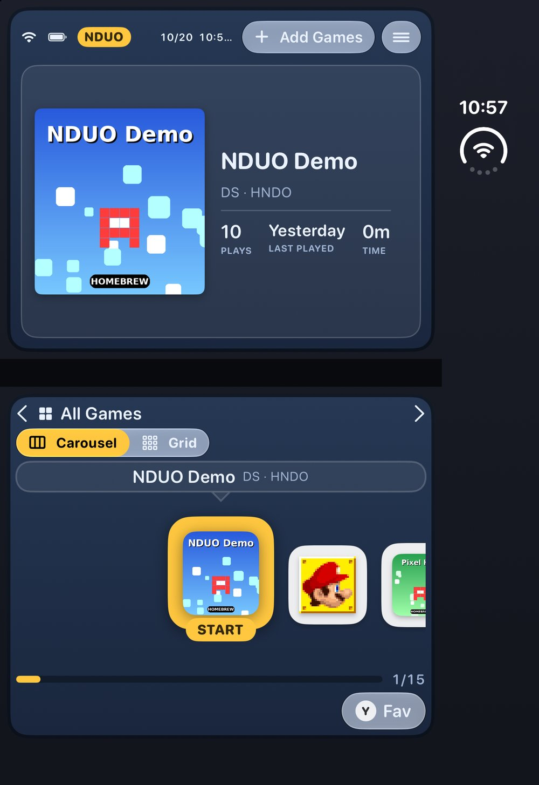
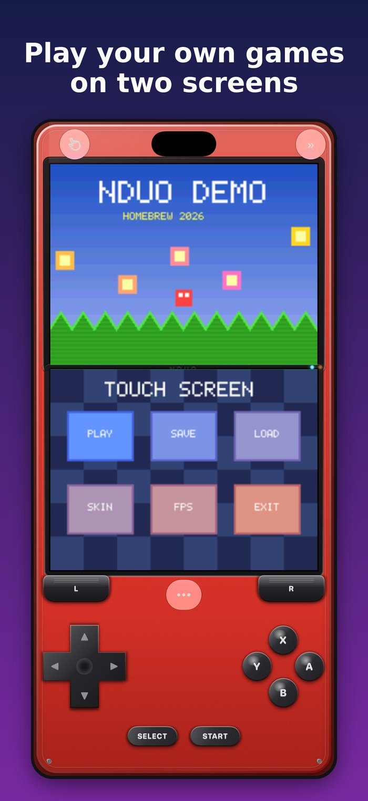
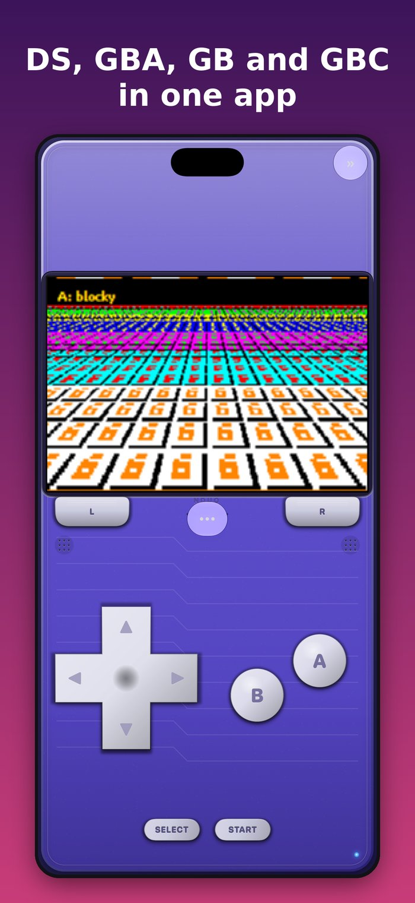
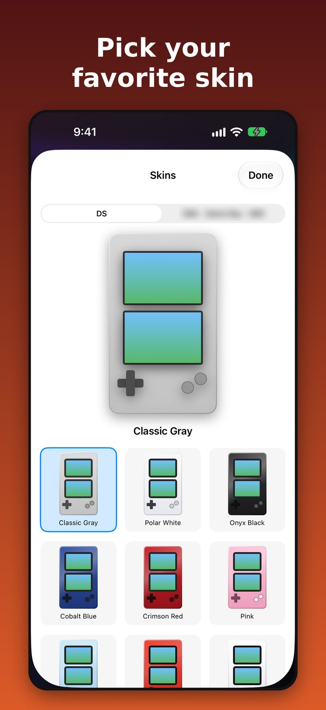
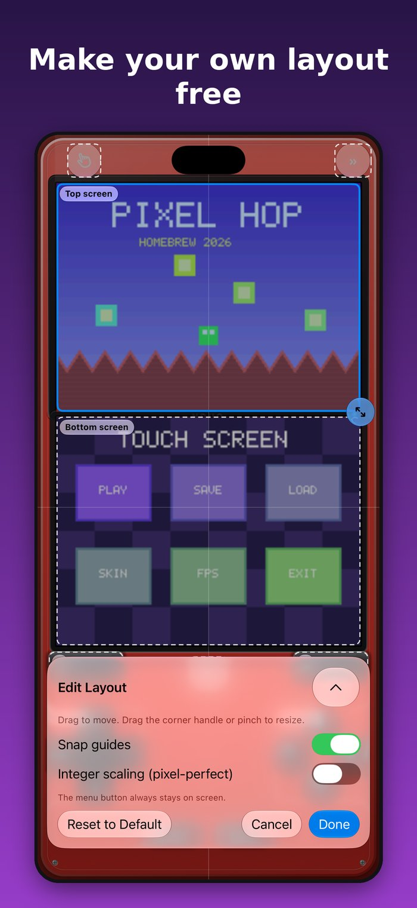

Built for iPhone Duo
Hecho para el iPhone Duo
Unfold it and NDUO turns it into a real dual-screen handheld: the top screen and the touch screen sit on either side of the fold. Tap and drag on the bottom screen like a stylus.
Ábrelo y NDUO lo convierte en una consola de doble pantalla de verdad: la pantalla de arriba y la táctil quedan a cada lado de la bisagra. Toca y arrastra en la pantalla de abajo como con un stylus.

Two screens on every iPhone
Dos pantallas en cualquier iPhone
Dual-screen layouts in portrait and landscape work great on every other iPhone too.
Los diseños de doble pantalla en vertical y horizontal también funcionan en cualquier otro iPhone.

Four handheld systems, one app
Cuatro consolas portátiles, una app
Plays your own DS, GBA, GB and GBC game files. A built-in BIOS is included, so no BIOS files are needed.
Juega tus propios archivos de juegos de DS, GBA, GB y GBC. Trae un BIOS integrado, así que no necesitas archivos BIOS.

Skins that feel like the real thing
Skins que se sienten reales
Realistic skins inspired by classic handhelds, plus a clean glass design that fits right in with iOS.
Skins realistas inspirados en las portátiles clásicas, con un diseño de cristal limpio que encaja con iOS.

Make your own layout, free
Crea tu propio diseño, gratis
Move and resize the screens and every on-screen button, with snap guides and integer scaling, saved per console and orientation.
Mueve y cambia el tamaño de las pantallas y de cada botón, con guías y escala entera, guardado por consola y orientación.

Touch controls made for phones
Controles táctiles para el teléfono
Slide between buttons, press A+B together, diagonals, size, opacity and vibration.
Desliza entre botones, A+B a la vez, diagonales, tamaño, opacidad y vibración.
Game controllers
Controles de consola
Works with MFi, Xbox and PlayStation controllers.
Funciona con controles MFi, Xbox y PlayStation.
Save states
Partidas guardadas
Save states plus normal in-game saves.
Estados guardados además de las partidas normales del juego.
Your library
Tu biblioteca
Cover Flow, cartridge view and title-screen view.
Cover Flow, vista de cartuchos y vista de pantallas de título.
Home Screen widget
Widget de inicio
Open recent, favorite or most played games with one tap (iOS 17+).
Abre tus juegos recientes, favoritos o más jugados con un toque (iOS 17+).
Sharp 3D
3D nítido
High-resolution 3D on newer iPhones; 3x by default on iPhone 15 Pro and newer.
3D en alta resolución en iPhones nuevos; 3x por defecto en iPhone 15 Pro o más nuevo.
No games included. NDUO does not include or download any games or system files. You must supply your own legally obtained game files, such as backups of cartridges you own, or free homebrew from independent developers. NDUO is not affiliated with or endorsed by any console maker.
No incluye juegos. NDUO no incluye ni descarga juegos ni archivos del sistema. Debes usar tus propios archivos obtenidos legalmente, como copias de cartuchos que tienes, o homebrew gratis de desarrolladores independientes. NDUO no está afiliado ni respaldado por ningún fabricante de consolas.